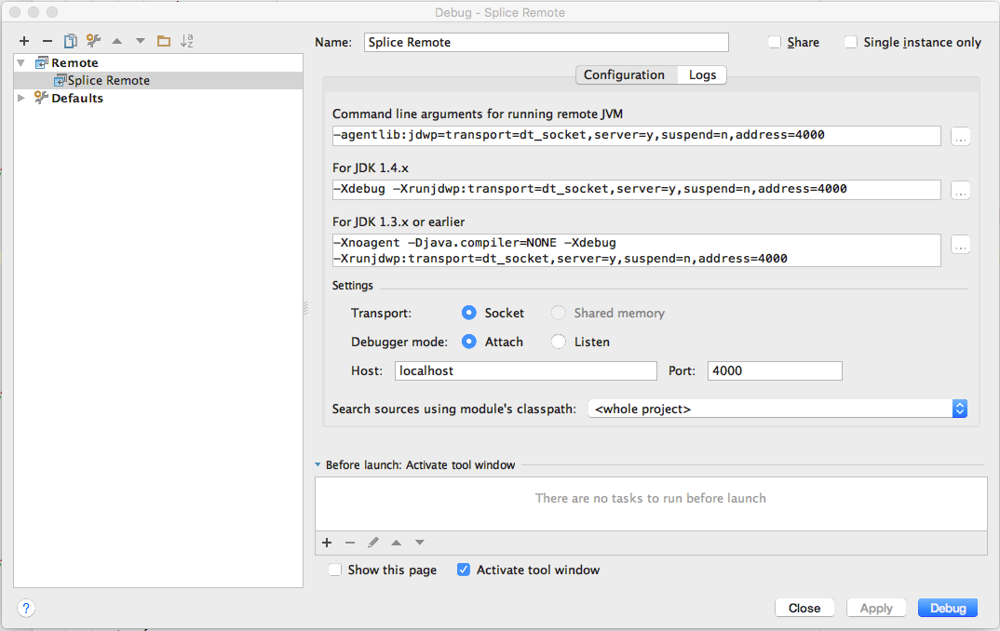

This topic describes the parameter values you need to know for debugging Splice Machine with a software tool:
Connect to port 4000.
NOTE: If you're debugging code that is to be run in a Spark worker, connect to port 4020 instead.
Example
Here's an example of an IntelliJ IDEA debugging configuration using port 4000:

For access to the full source code for Splice Machine, visit our open source GitHub repository: https://github.com/splicemachine/spliceengine